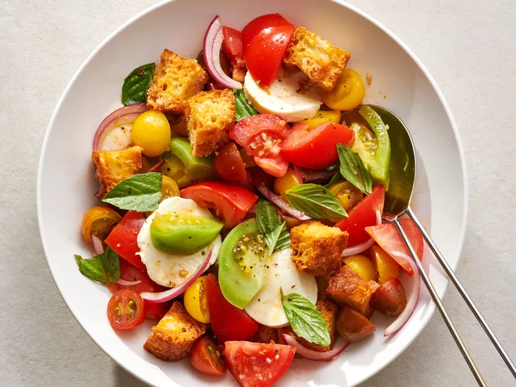

Panzanella Salad

Description
The other tomato-centric dish that we're all rallying around is panzanella, an easy-to-make salad with
fresh veggies and toasted or stale bread. While there are many seasonal versions to try, including one
with grilled peaches, the simplicity of tomato, basil, mozzarella, and a few other add-ins, is a recipe for success.
Ingredients
- 4 cups cubed day-old bread
- 1/4 cup olive oil
- 1/2 teaspoon salt
- 1/4 teaspoon black pepper
- 2 cups cherry tomatoes, halved
- 1/2 small red onion, thinly sliced
- 1/4 cup fresh basil, chopped
- 1/4 cup fresh mozzarella, cubed
Steps
- Preheat the oven to 375°F.
- Toss the bread cubes with the olive oil, salt, and pepper.
- Spread the bread cubes on a baking sheet.
- Bake for 15-20 minutes, or until golden brown and crispy.
- Let the bread cubes cool.
- Combine the bread cubes, cherry tomatoes, red onion, basil, and mozzarella in a large bowl.
- Toss to combine.
- Serve immediately.